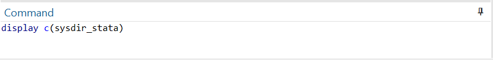
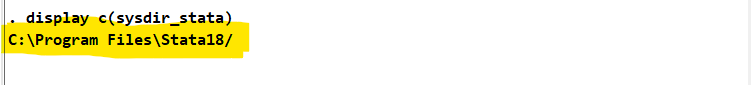
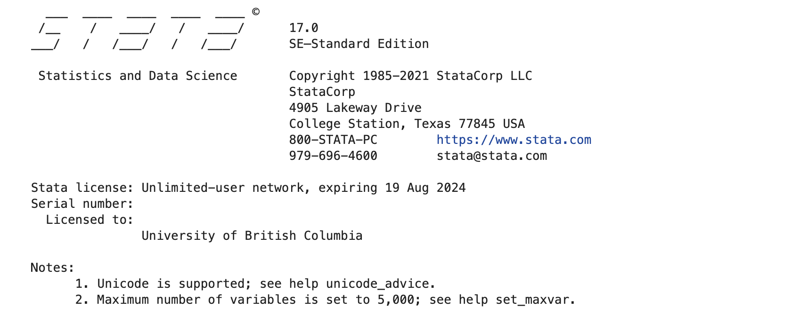

Setting up PyStata for your Windows computer
Prerequisites
- Have installed Stata onto your personal computer.
- Have installed Anaconda Navigator onto your personal computer.
Learning Outcomes
- Connect Stata on your personal computer to Jupyter Notebook.
1.1 Jupyter and Stata
Before you begin you will need to have installed Stata from the UBC portal. Please be certain to sign in using your CWL before searching for Stata. This software is free for all students in the UBC Faculty of Arts.
You will also need to install Anaconda Navigator in order to be able to run your files in a local version of Jupyter Notebook.
Conda is an open-source package and environment management system. With Conda we can create a particular directory folder (also known as environment) that will contain the packages that allow us to run Jupyter online notebooks which run code coming from different softwares (henceforth referred as kernels): Stata, R, Python, etc. The bare minimum for our environments is some version of Python.
The only way to set up an environment based on Stata requires us to manually connect our computer’s Stata program to Jupyter Notebook.
Note: You will only have to do this once on any computer. After that you will be able to go directly to Jupyter Notebooks for your work.
1.2 Setting up Your Computer
In order to execute the following commands on your computer, you will need to access your computer’s terminal window. A terminal window includes a prompt that indicates where you will enter commands. The prompt you see depends on your own system, but it often includes the name of the host you are logged in to, your current working folder, your user name, and a prompt symbol.
To open the terminal in Windows, do one of the following:
- If you are on Windows 11, click the Start button and select “All Apps”. Scroll down the Start menu and right-click on the file named “Anaconda3 (64-bit)”. Next, left-click on “Anaconda Prompt”, select “more” and click “Run as Administrator”.
- Alternatively, click the Search icon, start typing “Anaconda Prompt”, and then Run as Administrator from the search results.

Once you have the terminal open, you can run the commands conda that can find packages to install from channels. This is not dissimilar to downloading software from a server. You want to make sure that the computer first finds the conda-forge channel. To allow this, you should run the following commands directly in your own terminal window in Jupyter Notebooks:
conda config --add channels conda-forge
conda config --set channel_priority strict
The goal here is to create a package bundle, i.e. an environment, where you will install some version of R, Stata Kernel, and Jupyter. You can explore the things you can download to an environment from the conda-forge channel by running, for example, conda search r-base, conda search stata_kernel, etc. That way, you can see that the terminal lists all the different versions of these packages that you can download from the different channels.
Now we are ready to create a new environment where we can install all these packages. In this particular case, we will create an environment based on Python 3.9.7. Let us create an environment called econ_pystata by writing:
conda create -n econ_pystata python=3.9.7
If you omit the =3.9.7 part, you will create an environment with the default Python version.
We want anything that we install from the channel to be part of this new environment. To do so, we need to activate it by running
conda activate econ_pystata
Now that our environment is activated we can install everything we want. We begin by installing Jupyter, which will allow us to run the interactive notebooks:
conda install jupyter
1.3 Setting up the STATA Path
Next, we need to find out where STATA is configured on our computer. To do this, launch STATA on your computer. Once it has launched type display c(sysdir_stata) in the command window:

Hit “enter”, and a computer path result should appear in the output above the command window. Write down this path.

For example, in the remainder of this notebook we will be using the default path for STATA 18 on Windows 11, which is C:\Program Files\Stata18
1.4 Installing PyStata on our environment
To enable Python to find Stata’s installation path and the pystata package, we use the pystata Python module stata_setup.
The simplest way to install this setup module is to use the Python package manager pip from the Python Package Index (PyPI). Open up your Anaconda prompt as an administrator, and activate your environment by typing conda activate econ_pystata.
Then, install the new software by typing the following line of code, and then press enter:
pip install --upgrade --user numpy pandas ipython
This will install the required dependencies for the pystata package.
Now, we are ready to install the package. Type the following line of code in your anaconda prompt:
> pip install --upgrade --user stata_setup
This will install the stata_setup module.
<b> NOTE: </b> Whenever you are using `pip`, make sure that you are running the anaconda prompt <b>as an administrator</b>. Otherwise, this will not work!1.4 Opening Jupyter Lab
You are now ready to open Jupyter Lab. In your Anaconda navigator, type the following line of code and press enter to open Jupyter lab:
jupyter lab
After a second or two this will open up jupyter lab on your web browser. Make sure you are still in the econ_pystata environment!
1.5 Importing Stata into Jupyter
In your notebook, begin by creating a new cell and typing the following two lines of code:
import stata_setup
stata_setup.config('C:\Program Files\Stata18/','se')
The stata_setup.config() function is used to locate STATA through Jupyter. This function has two arguments: the first one is Stata’s installation path and the second one is the edition to use. UBC offers students free access to the Stata SE edition, so make sure your Stata version is Stata SE. If you have a different path to Stata, replace the provided path with your absolute path (Ex. C:\Desktop\Stata18/'). This path should be the one you wrote down above, in Step 1.3.

You are now ready to start using STATA in Jupyter. Remember to launch your environment and Jupyter Lab again when you want to use Jupyter; you will need to do that part every time. However, you don’t have to install pystata or perform these set-up tasks again.